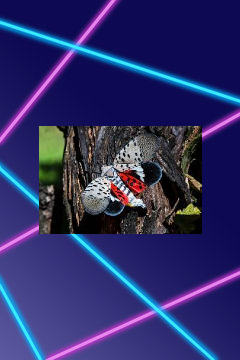

Meet The Highlanders
Highlander Spotlight
Class Troublemaker: Lycorma delicatula aka Spotted Lanternfly
Poses a serious economic threat to multiple U.S. industries, including viticulture, fruit trees, ornamentals and timber
This insect was accidentally introduced into Pennsylvania and was confirmed in the state in September 2014. At first it was only found in Berks County, however, today it has spread throughout Pennsylvania and to neighboring states, including New Jersey.
What's up fellow delinquents? Let the festivities begin. Lycorma delicatula here, Spotty for short, reporting live from the most treacherous depths of NJIT! Muahahaha! I'm surprised I haven't been placed on disciplinary probation. Click on the yearbook picture (below) of this irresistible insect, yours truly, to learn more about my misdeeds.
Image Credit © Adobe, NBC News
Student Profiles
Class Troublemaker
Lycorma delicatula aka Spotted Lanternfly © NBC News
Class Sweetheart
Lasius niger aka Black Garden Ant or Common Black Ant © RSPB
Most Likely to Succeed
Bombus aka Bumblebee © NPR